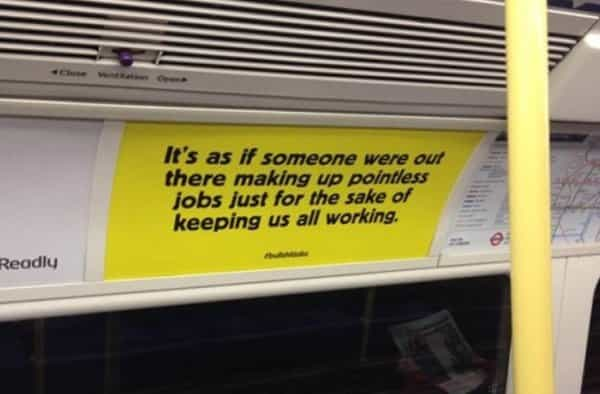

André is a young European who left his decaying country in 2012 for greener pastures. He enjoys exploring subterranean places, reading about a host of interconnected topics, and yearns for Tradition.


Some jobs are physically tough. Some are intellectually demanding. Some are milder, more in the middle, yet still useful. And then there are bullshit jobs: paper-shufflers, keywords typers, CAPTCHA fulfillers, “digital project managers”, consultants specialized in consulting, “coordinators” with barely anything in need to be coordinated and so on.
American Psycho has become commonplace. You don’t need to wear fancy suits and stroll around New York to work a pointless job and pretend otherwise. More often than not, the will to pursue intellectual and hype, fashionable jobs, leads to this kind of situation: industrial mechanics students barely get useless, full-of-hot-air pseudowork to do.
Are you working an apparently hip, yet unsubstantial, void, aimless job? Do you feel like what you’re doing is bullshit? Here are 15 tell-tale signs that, perhaps, your activity is all about saving appearances inside a wider yet hollow scam. But first…

These meaningless employments have been used by a well-paid leftoid babyboomer who happens to occupy a pulpit at the London School of Economics (created by the early globalist Fabians). Anthropologist David Graeber published in 2013 an article “on the phenomenon of bullshit jobs”, which since then got heavily promoted by the bobosphere—some of its sentences have been turned into taglines on display on the London subway. Ironically, the article itself is three-quarters bullshit.
The piece is indeed a disordered rant, mixing convoluted tangential remarks with outright contradictory stuff, for example when Graeber suggests that “the elite” created aimless employments to keep people busy before adding that “the system was never consciously designed.” It was published on a leftist outlet, with the mandatory leftist flavor, and starts with a mandatory reference to arch-planner, authoritarian government-supporter Keynes.
Nowhere does the pulpit-occupier mention actual causes of why “we are not all working 3-4 hour days”, i.e. that feminism, immigration, and outsourcing considerably lowered the price of labor, or that the rise of marketing and well-crafted appearances created an arms race and hence an actual need for propaganda spam PR.
Graeber’s piece is also a prime example of the unfair double standards the System uses to support its annuitants against us. A LSE professor can speak without quoting any actual source, for example when he says that in the Soviet Union three clerks would sell a piece of meat, perhaps he made this up or some other official lecturer did and they all believe no one will check. He can also suggest that “the elite” does this and wishes that without being called a conspiracy theorist, in spite of the fact that he merely churns a narrative out. When we, however, discuss actual facts that show how flawed the official version of an event is, though, the MSM points a finger. Seems legit.
In spite of these glaring defects, which may be proof that Graeber is well integrated to his less than healthy social milieu, the expression took off. Its appropriator will milk it with a book to be issued next year. (On the record, he also managed to pull a marketing coup with Debt, a dispensable book that uses a tired Marxist argument of debt coming from private property to trivialize the current financial system.) Perhaps someone should write a book titled Bullshit Money: How To Get Rich By Reflecting Modern Nothingness.
Although these positions span across many names and places, they all have many traits in common. You may be working one of them if…
1. You work in an office. Most if not all BS happens with computers and a cushy workplace. Other places make it harder to pretend you’re working when you are actually scrolling through your Facebook feed.
2. Your task is stupid, absurd, or much less important than told. On paper, you are calling prospects and ensuring a follow-up, in practice all prospects are dealt with before 10 AM and the follow-up is but a formality. Or, you were hired to a promotion task force, and you are typing keywords again and again in such a way that Google doesn’t ban the pages you’re editing.
3. Your job title is as impressive as it is obscure. If you’re a Junior Brand Creative Strategist, a Relational Optimization Specialist, a Corporate Implementation Analyst or anything that could be made of random keywords, chances are, either you are doing a lot of interrelated yet different things, or very few things at all.
4. You have difficulties explaining to others what you’re doing for a living. Not because it is very technical—even the most complex task can still be made accessible to the average guy—but because it is rather lacking in substance. “Um, I enter numbers on an accounting software, I make graphics that look good, and I get free cookies on the daily PowerPoint meeting.”
5. Very few skills are needed. You studied hard in college yet you could do your job even if you were a high school dropout. Pushing buttons, typing numbers and keywords, avoiding the bad mood of useless bosses and HR, etc. And you still have to commute every day.
6. Deep down, you know your job should not even exist. A friend told me his days as an Internet marketer were mostly about cheating Google to promote websites, then getting banned by a newer version of the Google algorithm, then adapting and so on. This Google programmers-independent marketers game looks like when you have to dig holes and your coworker was hired to fill them.
7. Most employees around you are women. Where work is dispensable and comfy, women take over. The actual work, whether physical or intellectual, is done by men. Diversity-pushing companies will glad hire women to do a job they are unable to do. Then these women will outsource it to freelancers for a fraction of their own wage.
8. Gossip is a substantial part of the work. When tasks are simple or nonexistent and women are the majority, the psychosocial aspect becomes way more important than getting (real) shit done. If you don’t fall in line, all protective shams will be put down—everyone pretends to work but you will be accused of not working—and ciao.
9. Procedures are unnecessarily complicated. Say you are working in security: most of your day consists in printing out entrance badges, calling your absolutely dispensable boss in front of newcomers, applying blindly stupid rules that ignore the context. As you are checking the “contract personal” box, you know you could not a stop a real security threat. When security guys can’t do shit—they bear too much liability on their backs—smoke and mirror procedures kick in.
10. You sell stuff you know is useless. Lie bot, here I come! Do you know you could optimize your work and supercharge your company by taking this exclusive dietary complement? Word is, Phil Heath was using it secretly. Here, let me show you photos, and a video, and bogus testimonies. See, it’s better than Kratom!
11. No one reads what you write. You churn out official reports or memos or whatever so that your company has plausible deniability and that managers, shareholders and the like can pretend everything is serious.
12. You relate to the notion of boreout.
13. You spend a lot of time on Twitter, Facebook, Bored Panda and innumerable “social media” websites. Poor bloggers struggle to publish numberless silly pieces so that overpaid employees scroll through their day.
14. Management is absolutely useless. As Dilbert could say, some managers are incompetent individuals who were put there so that they wouldn’t do too much harm whereas the employees, working well by themselves, actually support the company. The most bullshitty guy I’ve ever seen was a Senior Consultant Manager who had no single employee to manage.
15. You must attend frequent meetings and seminars. Everyone knows these are the most used folding screen when it comes to hide nothingness.
Bonus: you spent hours reading about bulking on a budget or taking the best preworkouts, but doing nothing consistent through the day makes you too tired (or lazy) to even lift.
Most of current humanity was called into being because of an overly productive industrial system. When jobs are automated or outsourced, the obvious effect is an increased joblessness. But instead of sheer unemployment we witnessed a rise of bureaucratic jobs. We know that bureaucratic institutions tend to produce rationales aiming at maintaining themselves into existence and increasing their funding. At the same time, as women took over the workplace, they turned it into a cushier, childier, more conformist zone, where actual work matters much less.
Perhaps this giant heap of nothingness is a manifestation of the pointlessness of modern civilization. In any case, the better way to escape it is to leave the overpriced, crime- and degenerates-ridden metropolis behind and get a nice piece of land that can be toiled without a HR department.
Read Next: Should Students Be Able To Successfully Sue Their Schools If They Don’t Find A Job After Graduation?